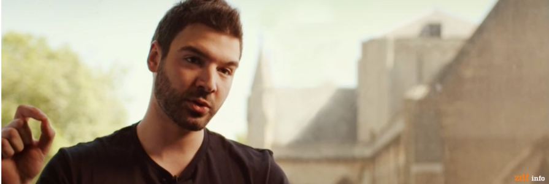

I am a Doctoral Researcher in the Information Security Group at University College London, advised by Prof. George Danezis and Dr. Emiliano De Cristofaro.
My research focuses on Machine Learning Robustness, Blockchains and Privacy, while I have also pursued projects on Trusted Hardware, Privacy-preserving Computations and Technical Market Manipulation.
Currently, I am working on deep neural networks and how they can be used to launch attacks against privacy (e.g., website fingerprinting), as well as potential countermeasures to such practices. I am also investigating adversarial samples and the worst-case robustness of DNNs deployed in production.
Besides these, I have worked on a variety of other projects (see Publications). Snappy is a fast-payment solution for slow permisionless blockchains. Myst is a high-assurance cryptographic hardware prototype which was the first trojan-resilient deployment that achieved performance similar to that of conventional hardware security modules used in production (CSAW 2018 Competition Finalist). Our study on ultrasound tracking received wide-spread attention and is considered the seminal work in this area. With Petr Svenda, we created and maintain the first open-source cryptographic library for JavaCards.
For my research, I have been kindly supported by Oasis Labs, Binance Labs, the Allan & Nesta Ferguson Charitable Trust and the UCL Public Engagement Unit. I was also honored to be in the 10-of-200 young researchers' list by the Heidelberg Laureate Forum, a recipient of the Werner Romberg Grant, as well as a finalist at the CSAW Europe 2018 Applied Research Competition.
If you have any fun project ideas, feel free to drop me a line.
Libra: Fair Order-Matchingfor Electronic Financial Exchanges.
Mavroudis V., Melton H., Advances in Financial Technologies AFT 2019, October 2019
Market Manipulation as a Security Problem: The case of decentralized exchanges.
Mavroudis V., 26th International Workshop on Security Protocols, April 2019
Market Manipulation as a Security Problem: Attacks and Defenses [PDF]
Mavroudis V., 12th European Workshop on Systems Security (EuroSec), March 2019
Snappy: Fast Blockchain Payments.
Mavroudis V., , Wuest K., Dhar A., Kostiainen K., Capkun S., Under submission. Feb 2019
Location, location, location: Revisiting modeling and exploitation for location-based side channel leakages.
Andrikos C., Batina L., Chmielewski L., Lerman L., Mavroudis V., Papagiannopoulos K., Perin G., Rassias G., Sonnino A., Feb 2019
Towards Low-level Cryptographic Primitives for JavaCards.
Mavroudis V., Svenda P., Oct 2018
VAMS: Verifiable Auditing of Access to Confidential Data.
Hicks A., Mavroudis V., Al-Bassam M., Meiklejohn S., Murdoch S., May 2018
Eavesdropping Whilst Youre Shopping: Balancing Personalisation and Privacy in Connected Retail Spaces [PDF]
Mavroudis V., Veale M. (Equal Contribution), PETRAS/IoTUK/IET Living in the IoT Conference, 2018.
A Touch of Evil: High-Assurance Cryptographic Hardware from Untrusted Components [PDF, ArXiv]
Mavroudis V., Cerulli A., Svenda P., Cvrcek D., Klinec D., Danezis G., 24th ACM Conference on Computer and Communications Security, 2017.
CSAW 2018 Applied Research Competition Finalist.
On the Privacy and Security of the Ultrasound Tracking Ecosystem [PDF]
Mavroudis V., Hao S., Fratantonio Y., Maggi F., Kruegel C., Vigna G., Proceedings of the Privacy Enhancing Technologies Symposium, 2017
Visual Analytics for Enhancing Supervised Attack Attribution in Mobile Networks [PDF]
Papadopoulos S., Mavroudis V., Drosou A., Tzovaras D., 29th International Symposium on Computer and Information Sciences, 2014
Development of Realtime Mobile Security Monitoring System
Mavroudis V., Mavridis I., 2nd Conference on Information Technology Applications and Administration Strategies, 2010.
Use and Effective Application of Free and Open Source Software in Education
Mavroudis V., Mouratis S., 4th National Conference of Information Technology Educators, 2010.
The Ultrasound Tracking Ecosystem.
Vasilios Mavroudis, Shuang Hao, Yanick Fratantonio, Federico Maggi, Giovanni Vigna, and Christopher Kruegel. November 2016
Correlation Analysis and Abnormal Event Detection Module.
EU FP7 Project: Enhanced Network Security for Seamless Service Provisioning in the Smart Mobile Ecosystem
Anomaly detection based on real-time exploitation of billing systems.
EU FP7 Project: Enhanced Network Security for Seamless Service Provisioning in the Smart Mobile Ecosystem
Anomaly detection within femtocell architectures.
EU FP7 Project: Enhanced Network Security for Seamless Service Provisioning in the Smart Mobile Ecosystem
Network information sources.
EU FP7 Project: Enhanced Network Security for Seamless Service Provisioning in the Smart Mobile Ecosystem
Crux: Privacy-preserving Statistics for Tor, Information Security Group, University College London, UK, 2015.
Supervisor: George Danezis
Cassiopeia: Real-time mobile security monitoring system, Dept. of Applied Informatics, University of Macedonia, Greece, 2012.
Supervisor: Ioannis Mavridis